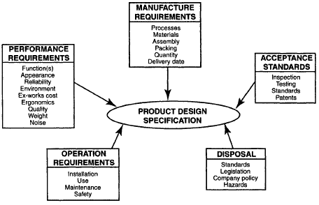

Due - February 4, 2022
This assignment explores the business case and requirements for setting up a factory for the design and production of a new type of car battery. In doing so, many factors have to be taken into consideration, such as the effect on the environment and society, as well as the risks and opportunities involved. This assignment will also contain weekly problems that the students have to resolve.
You have patented a new technology which can be used with a car battery. The battery can be used inside a hybrid vehicle or a purely electric vehicle. The technology involves the use of solar panels to charge the battery while the vehicle is in operation.
You have the option of creating a new battery from scratch or attaching your new technology to one of the existing types of car battery. Existing battery types are:
Question: which of the three above technologies do you think you should piggy-back your new technology? Why?
You can produce two types of batteries: and advanced enhanced battery, and a simple enhanced battery.
For the advanced enhanced battery, your new technology will double the price of each battery type but will also double the capacity of each battery type, depending on the availability of sunlight.
For the simple enhanced battery, your new technology will add 50% to the price of each battery type but will also add 50% to the capacity of each battery type, depending on the availability of sunlight.
Question: which of these two battery types should you piggy-back your new technology? Why? In determining which battery to produce, you might wish to look at the Tesla models as a baseline for the advanced enhanced and the simple enhanced batteries. Tesla models can be seen at Tesla Vehicles Compared. For instance, the Tesla Model S uses lithium-ion battery cells in 16 modules and has a range of up to 600km.
Question: how much are you going to charge for your battery? For production, you will need to purchase roughly $250,000 worth of equipment to build either type of enhanced battery. Since your enhanced battery (simple or advanced) will provide the cash flow, you need to determine the price for each and the profitability for each. In doing so, you will have to research the cost and profitability of the lithium-ion battery, the nickel metal hybrid battery, and the lead acid battery.
You had received $200,000 as inheritance from relatives which have passed on. You have skillfully invested this in stocks which give you 5% annual dividend and 5% annual growth. Your funds now amount to $400,000.
Bank loans are available to you up to $5,000,000 at 2% interest rate if they consider you a low risk customer, or 5% if they consider you a medium risk customer. The bank will not give you a loan if they consider you a high risk customer.
Investors are interested in financing your operation. They are willing to give you $2,500,000 but they want 50% ownership of your product and warehouse. They are also willing to lend you $2,500,000 at 3.5% interest rate.
The rate of inflation is 2%.
Question: at this point, do you feel you should go ahead with your plans to mass-produce the enhanced battery or should you simply keep your money in stocks? Why?
You have three options for a warehouse: one by a lake, one by train tracks, or build a new one near train tracks.
Question: Which warehouse are you inclined to go with and why?
In preparing the specifications for your hybrid battery warehouse and your battery, please consider the following:

See course notes from week 3 for details on each of these requirements.
Please write specifications for your warehouse. The specifications for your warehouse should mostly be taken from the manufacture requirements, acceptance standards, and disposal.
Please write specifications for your battery. The specifications for your hybrid battery should mostly be taken from the performance requirements and operation requirements.
At this point, you have much more information than when you were looking at batteries, financing and warehouse locations. Question: which warehouse is the best in the short term (1-5 years), the medium term (5-15 years), and the long term (greater than 15 years)? You might wish to write a computer program to calculate your profits for each term.
Considering your new battery, do you feel it is worthwhile going ahead with the new technology, or a known and proven technology? Please justify your decision quantitatively (with numbers) and qualitatively (without numbers).
Please add any other comments on whether you want to go ahead with this production plan or not.
Assignment 1 is worth 15% of your final grade and as such is marked out of 15 as follows:
| Does not meet expectations | Satisfactory | Good | Exceeds Expectations | |
|---|---|---|---|---|
| The Battery (2 marks) | Does not meet requirements | Meets the most important requirements | Meets all requirements with minor errors | Meets all requirements with no errors |
| The Financing (2 marks) | Does not meet requirements | Meets the most important requirements | Meets all requirements with minor errors | Meets all requirements with no errors |
| The Warehouse (2 marks) | Does not meet requirements | Meets the most important requirements | Meets all requirements with minor errors | Meets all requirements with no errors |
| The Specifications (3 marks) | Does not meet requirements | Meets the most important requirements | Meets all requirements with minor errors | Meets all requirements with no errors |
| The Business Case (3 marks) | Does not meet requirements | Meets the most important requirements | Meets all requirements with minor errors | Meets all requirements with no errors |
| Weekly Questions (3 marks) | Answers no question correctly | Answers some questions correctly | Answers most questions correctly | Answers all Questions correctly |
Please email any source code and documentation to: miguel.watler@senecacollege.ca
You will be docked 10% if your assignment is submitted 1-2 days late.
You will be docked 20% if your assignment is submitted 3-4 days late.
You will be docked 30% if your assignment is submitted 5-6 days late.
You will be docked 40% if your assignment is submitted 7 days late.
You will be docked 50% if your assignment is submitted over 7 days late.